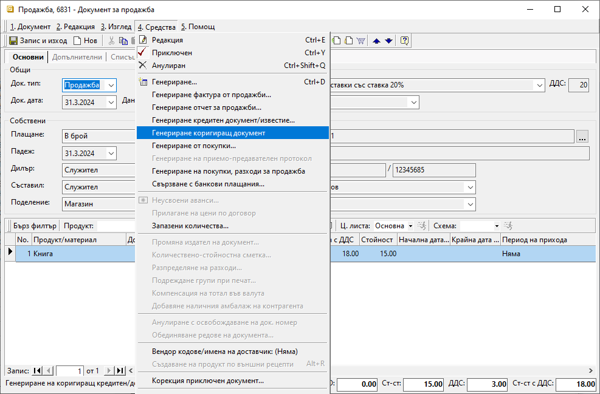
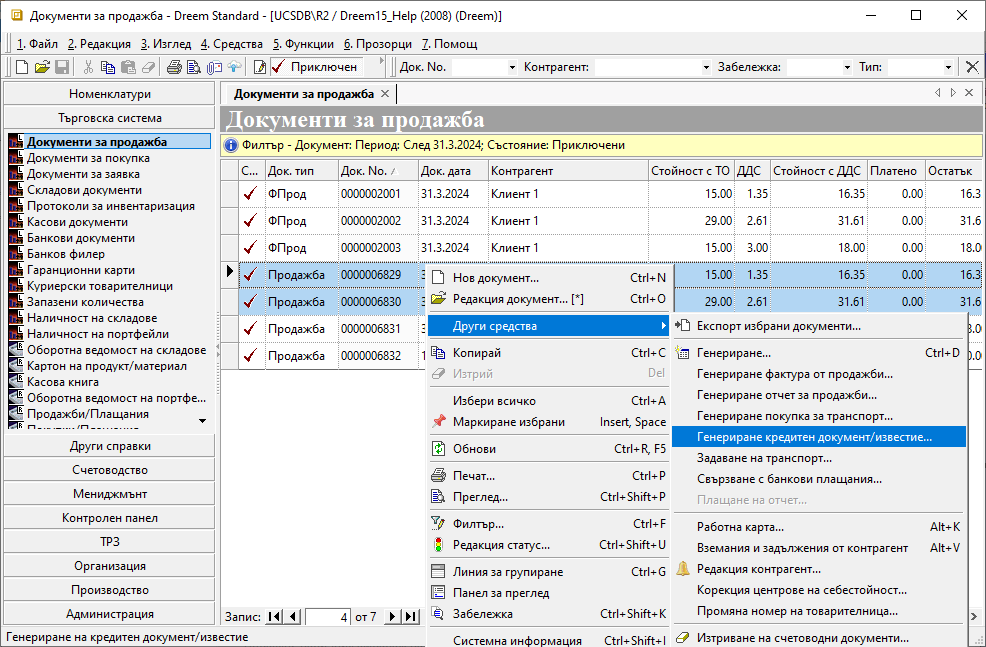
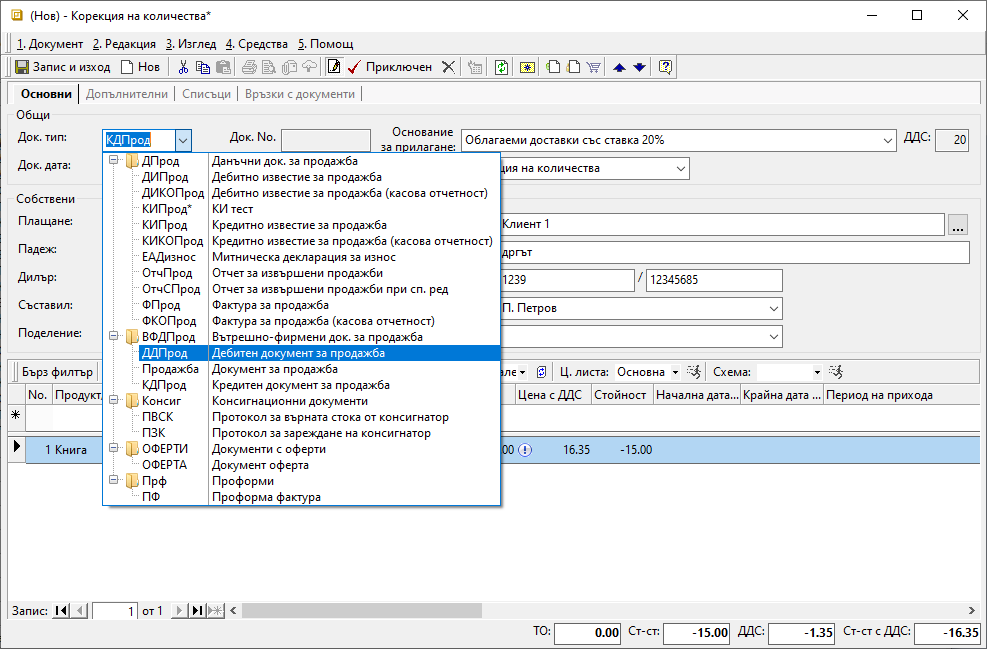

Коригиращи документи при продажба#
Въведение#
Използването на коригиращи документи се налага, когато за вече валидирана продажба трябва да променим цената или количество за един или няколко продукта. Ако тези промени са в посока намаление, говорим за кредитни документи. Когато искаме да намалим цена, се създават кредитни документи тип Корекция на цена, а при намаляване на количество - тип Корекция на количество.
И при двата типа системата прави генерация на коригиращ документ с отрицателен знак, задължително свързан с една или повече продажби/фактури.
Когато използвате вътрешнофирмени документи и първо създавате Продажба, към която генерирате данъчен документ (Фактура), същия ред спазвате и при коригиращите документи. Тоест, първо генерирате Кредитен документ, свързан с Продажба. При неговото приключване системата ще предложи издаване и на данъчен документ - Кредитно известие, автоматично свързано с Фактура.
Ако част от количество по продажба/и е върнато от клиента по някаква причина или няма да пристигне, отразявате това чрез коригиращ документ от тип Корекция на количество.
Повече за стъпките, които да следвате, прочетете в темата Как да създадем Кредитен документ/Кредитно известие за количество.
Когато искате да намалите цената, на която сте продали продукт/и, избирате тип на коригиращия документ Корекция на цени. Разгледайте в детайли как да направите това в Как да създадем Кредитен документ/Кредитно известие за цена.
Системата позволява различни варианти за генерация на тези документи. Всеки от тях е удобен в различна ситуация.
Кредитен документ към една продажба#
Ако създавате кредитен документ към една продажба, най-лесно е да използвате опцията Генериране коригиращ документ, която се намира в меню Средства в самата продажба. Така системата създава копие на документа за продажба, но с отрицателен знак.

Кредитен документ към няколко продажби#
Когато създавате общ кредитен документ към няколко продажби, имате избор дали да го направите от списъка с документи, или чрез създаване на нов документ.
Генерацията на кредитен документ от списъка с документи предполага да филтрирате така документите в него, че желаните продажби да са лесни за маркиране. След което с десен бутон на мишката върху маркировката избирате Други средства || Генериране на кредитен документ/известие и следвате стъпките.

При генерация чрез нов документ, първо създавате такъв, след което от меню Средства || Генериране кредитен документ/известие извеждате списъка с продажби. Тук филтрирате, за да изберете желаните документи, към които ще създадете коригиращ документ.

Кредитен документ без връзка с продажба#
Дотук обсъжданите генерации изискват и служат за създаване на свързаност между продажба и коригиращ я документ. Има случаи, обаче, в които не може да посочим конкретни документи/фактура за продажба, а се налага издаване на кредитен документ. Например - когато искате да направите обща отстъпка за натрупан оборот, когато по някаква причина документът за продажба липсва в системата и пр.
За тези случаи в системата има и трети тип коригиращ документ - Корекция като бонус. С използването му имате свобода при неговото създаване, каквато при типове Корекция на цена и Корекция на количество не се допуска. При тях се позволява да бъдат включени единствено продукти, участващи в свързаните продажби. Докато при типа Корекция като бонус съдържанието на кредитния документ може да бъде свободно избрано.
Документ от тип Корекция като бонус се създава единствено чрез Нов документ, в който ръчно обзавеждате всички реквизити.
Най-често при този тип кредитен документ се въвежда един ред с обща отстъпка. За целта в системата се настройва отделен продукт от тип Услуга, който не изисква водене на склад.

Тук отново важи правилото, че ако работите с вътрешнофирмени документи, първо се създава Кредитен документ, към който може да се генерира данъчният - Кредитно известие.
Дебитни документи#
Дебитните документи са коригиращ тип документ, използван за увеличаване на цена или количество по една или няколко продажби. Както споменахме при кредитните документи, така и при дебитните може да се коригират цена или количество единствено на участващи в продажбата продукти.
Ако желаете да завишите количества, може вместо дебитен документ да издадете нов документ за продажба.
Генерацията на дебитните документи в системата следва същите стъпки, които разгледахме за кредитни документи. Тъй като така се генерират коригиращи документи с отрицателен знак, задължително трябва да смените Док. тип.
Когато работите с вътрешнофирмени документи, типът на документа трябва да бъде Дебитен документ за продажба. При приключването му системата ще генерира автоматично и данъчния документ - Дебитно известие за продажба.

В статиите за Дебитен документ/Дебитно известие за цена и Дебитен документ/Дебитно известие за количество ще откриете подробни инструкции.